Railway Monitoring System

☰
Dashboard
Analytics
Alerts
Track Legend
Mainline / Standard
Sidings / Secondary
High-Speed Rail
Electrified
Narrow-Gauge
Disused / Abandoned
Subway / Underground
Light Rail / Trams
Bridges / Infrastructure
Find Nearest Tracks?
We can use your location to show nearby railway tracks.
Yes, locate me
No thanks